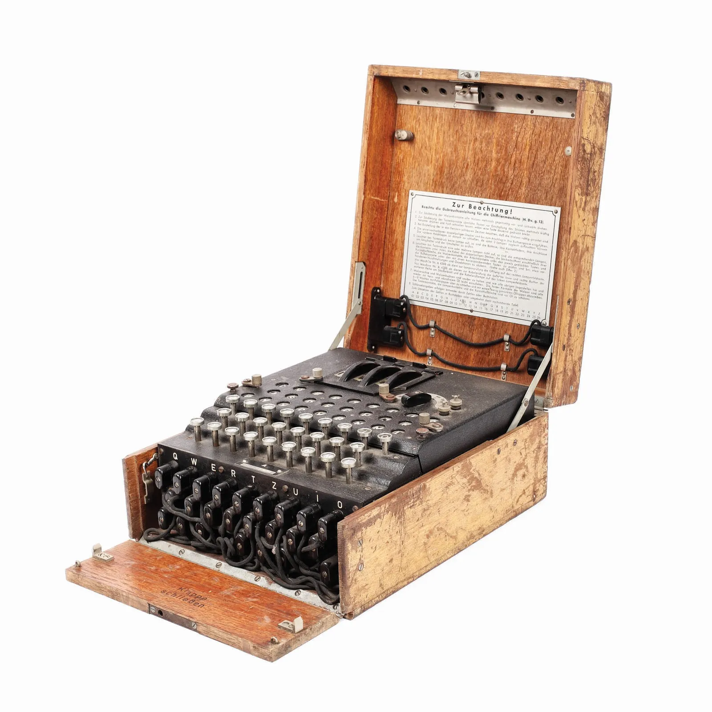

The Enigma has an electromechanical rotor mechanism that scrambles the 26 letters of the alphabet. In typical use, one person enters text on the Enigma's keyboard and another person writes down which of the 26 lights above the keyboard illuminated at each key press. If plain text is entered, the illuminated letters are the ciphertext. Entering ciphertext transforms it back into readable plaintext. The rotor mechanism changes the electrical connections between the keys and the lights with each keypress.
